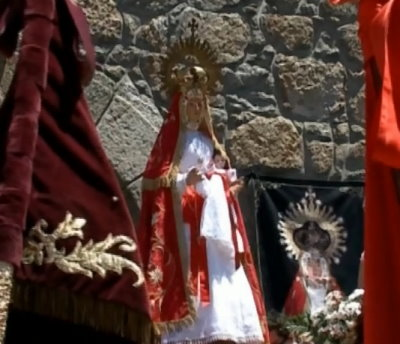

<= Nuestra Señora la Virgen del Rosario de Cantagallo. |
por j.polo.s - 2013 |
|  | Diurnal: "Fiesta instituida en 1573, como acción
de gracias por la victoria de Lepanto". Establecida por el Papa Pío V el 7 de Octubre, aniversario de la Batalla de Lepanto (1571), atribuida a la Madre de Dios, invocada por la oración del Rosario. Su sucesor, Gregorio XIII, contribuyó a su difusión al instituirla en aquellas parroquias que poseían cofradía. Clemente XI extendería la fiesta a toda la Iglesia en 1716. Las celebraciones se fijaron en el calendario eclesiástico el primer domingo de octubre, pero finalmente quedó el día 7 del mismo mes. La iconografía de esta Virgen no responde a unos
patrones fijos; varía de un lugar a otro. La
tradición del Rosario nace, según testimonia
la Iglesia, al aparecerse la Virgen a Santo Domingo de
Guzmán en 1208. Le enseñó a rezar el
Rosario, le invitó a propagar esta devoción
y a que la utilizara para la conversión de los
pecadores. La celebración de este día es una
invitación para todos a meditar los misterios de
Cristo, en compañía de la Virgen
María, que estuvo asociada de un modo
especialísimo a la encarnación, la
pasión y la gloria de la resurrección del
Hijo de Dios. La palabra Rosario viene a significar corona de rosas.
Metafóricamente cada una de sus Avemarías
sería una rosa y juntas compondrían la
corona. El rezo del Rosario implica dos procesos: uno
verbal y otro mental. Durante la oración mental se
debe meditar sobre los grandes misterios de la vida de
Jesucristo, sobre su dolor y su gloria. Está
formado por veinte misterios en cuatro grupos de cinco:
Gozosos, Dolorosos, Luminosos y Gloriosos. A cada misterio
le corresponden un Padre Nuestro, diez Avemarías y
un Gloria. Las cuentas de la cadena del Rosario nos sirven
para llevar el número de los rezos. |
Rezar el santo Rosario no sólo es hacer memoria del gozo, el dolor, la gloria, de Nazaret al Calvario. Es el fiel itinerario de una realidad vivida, y quedará entretejida, siguiendo al Cristo gozoso, cruficicado y glorioso, en el Rosario, la vida. Gloria al Padre, gloria al Hijo, gloria al Espiritu Santo, por los siglos de los siglos. Amén. |
Estatutos de la Cofradia de Nuestra Señora del Rosario de Cantagallo, versión imprimible, libro.